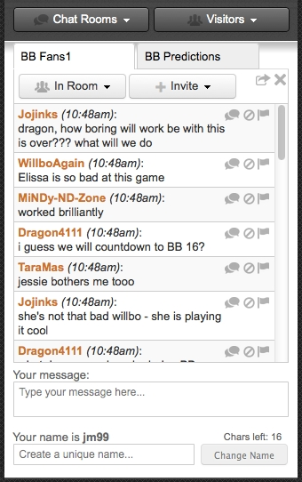

Building Realtime Applications with

Realtime is
Where your bus is
Realtime is
Collaborative drawing
http://tinyurl.com/mitdraws
Realtime is
Cryptocurrency prices
Realtime is complex
Many problems to solve.
Transport

Networks

Platforms
Realtime is complex
It's difficult to scale.

Firebase makes it simple

Some JavaScript code
Write Data
var ref = new Firebase("https://mit.firebaseio-demo.com/");
ref.set("Hello MIT!");
Read Data
ref.on("value", function (snapshot) {
var data = snapshot.val();
console.log(data);
});
Works with
Other Helpful Goodies

Data
Open Data Sets

Auth & Security

Hosting
We <3 developers
Let's write some code!
It works for
BIG projects too!
CBS
- Built a realtime chat platform for reality TV series Big Brother
- 50k concurrents at peak times, with over 27M chat message posted
Roll20
Online virtual tabletop using
Firebase as the backend.

Reviewable
GitHub code reviews backed by Firebase.

More Case Studies

Notifies users when streams go live

Pneumatic tubes
Realtime chat
The End
- Slides: katfang.com/presos/2015/6470
- Try Firebase: firebase.com/tutorial
- Cloud Chat: github.com/katfang/live-cloud-chat
Questions anyone?